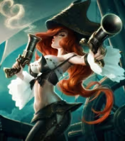

Miss Fortune, la Cazarrecompensas
Sarah Fortune es la capitana más temida de Aguas Estancadas. Tras presenciar el asesinato de su familia a manos del pirata Gangplank, juró vengarse y reclamar el control de la ciudad portuaria.
Armada con sus icónicas pistolas y una puntería letal, Miss Fortune combina elegancia y ferocidad en combate, dominando a sus enemigos con una lluvia implacable de balas.
-
Pasiva — Amor Impuro
Miss Fortune inflige daño adicional al atacar a un nuevo objetivo.
-
Q — Doble Disparo
Dispara a un enemigo, y la bala rebota hacia un segundo objetivo, infligiendo daño físico a ambos.
-
W — Alarde

Aumenta pasivamente su velocidad de movimiento si no recibe daño. Al activarla, obtiene velocidad de ataque adicional.
-
E — Lluvia de Balas
Dispara una lluvia de balas en una zona, ralentizando y dañando a los enemigos que se encuentren dentro.
-
R — Hora de las Balas

Canaliza una ráfaga masiva de disparos en forma de cono, infligiendo gran cantidad de daño a todos los enemigos alcanzados.